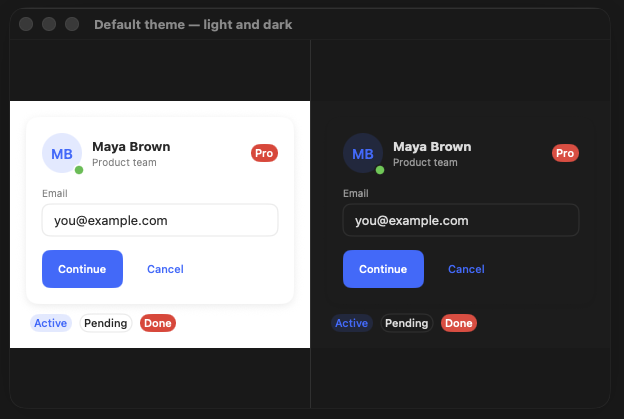
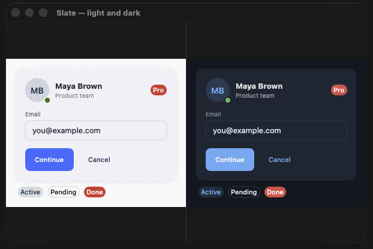
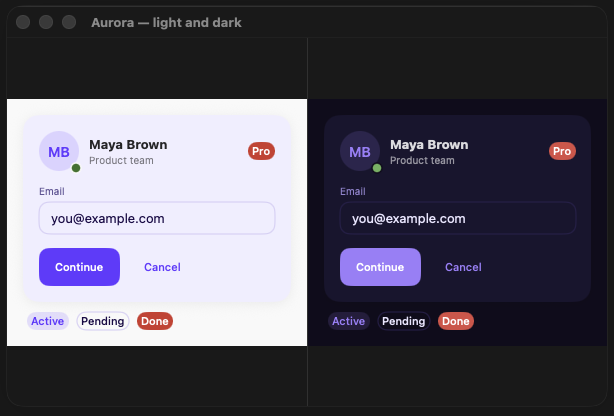
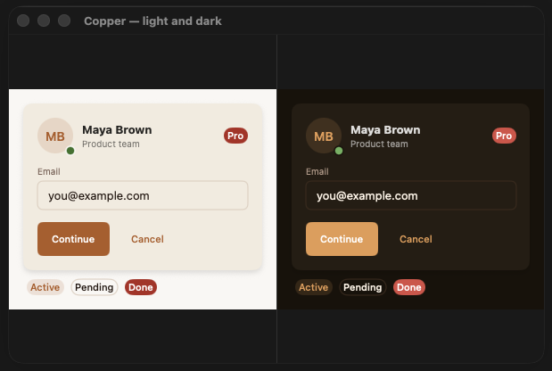
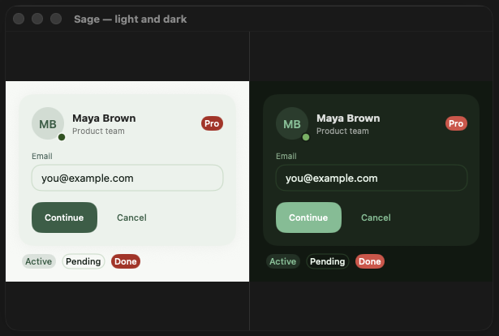

DesignFoundation
A production-grade SwiftUI design system. Token-based theming, protocol-driven style swapping, first-class Liquid Glass support, and a full component library — one dependency, instantly consistent across every screen.
DesignFoundation mirrors SwiftUI's own ButtonStyle pattern across every component.
Inject a DFTheme once at the app root; every component reads its colors, typography,
spacing, and radius from the nearest theme in the environment. Override any subtree. Write custom styles
by implementing one function. Zero hardcoded values anywhere.
Installation
Xcode
File → Add Package Dependencies, paste the URL below, and choose Up to Next Major from version 1.1.0.
https://github.com/NerdSnipe-Inc/design-foundation
Package.swift
// Package.swift dependencies: [ .package(url: "https://github.com/NerdSnipe-Inc/design-foundation", from: "1.1.0") ], targets: [ .target(name: "YourApp", dependencies: ["DesignFoundation"]) ]
Quick Start
import DesignFoundation @main struct MyApp: App { var body: some Scene { WindowGroup { ContentView() .dfTheme(DFTheme(colors: DFColorTokens(primary: .indigo))) } } } // In any view: DFButton("Get Started") { /* action */ } DFTextField("Email", text: $email) .dfTextFieldStyle(.outlined) DFCard { DFText("Hello", style: .headline) }
DFTheme
A single DFTheme struct propagates through SwiftUI's environment.
Inject it once at the root and every component responds automatically. Override at any subtree depth.
ContentView() .dfTheme(DFTheme( colors: DFColorTokens( primary: .indigo, surface: Color(.systemBackground) ), spacing: DFSpacingTokens(md: 20), radius: DFRadiusTokens(md: 12) ))
.dfTheme(...) to apply a different palette to just that section (e.g. a dark hero banner inside a light screen).
Tokens
Every component reads exclusively from these token namespaces — no hardcoded values anywhere in the library.
Colors — theme.colors
| Token | Purpose |
|---|---|
| .primary | Brand / interactive accent |
| .surface | Card and panel backgrounds |
| .surfaceElevated | Raised overlays, popovers |
| .textPrimary | Body and heading text |
| .textSecondary | Labels, placeholders, captions |
| .textDisabled | Disabled control labels |
| .border | Strokes, dividers |
| .interactiveFill | Input field backgrounds |
| .destructive | Delete, danger actions |
| .success / .warning / .info | Semantic status colors |
Spacing — theme.spacing
| Token | Default |
|---|---|
| .xs | 4 pt |
| .sm | 8 pt |
| .md | 12 pt |
| .lg | 16 pt |
| .xl | 24 pt |
| .xxl | 32 pt |
Radius — theme.radius
| Token | Default |
|---|---|
| .none | 0 |
| .sm | 4 pt |
| .md | 8 pt |
| .lg | 12 pt |
| .full | 9999 pt (pill) |
Typography — theme.typography
| Token | Usage |
|---|---|
| .display.font | Hero headlines |
| .title.font | Screen titles |
| .headline.font | Section headers |
| .body.font | Body text |
| .caption.font | Labels, helper text |
| .label.font | Small UI labels |
Preset Themes
Four opinionated visual identities ship in the box — each with a distinct color palette, corner radius scale, and shadow weight. One modifier; automatic light/dark switching.
// Recommended — auto-adapts to system light/dark MyApp() .dfThemePreset(.aurora) // Force a specific variant PreviewView() .dfTheme(.copperDark)
| Preset | Personality | Radius | Shadows | Best for |
|---|---|---|---|---|
| .slate | Professional, balanced | Default (md 8) | Standard | SaaS, developer tools |
| .aurora | Vibrant, creative | Rounded (md 10) | Soft | Creative tools, social |
| .copper | Warm, editorial | Sharp (md 6) | Defined | Finance, content readers |
| .sage | Calm, organic | Very rounded (md 12) | Airy | Health, wellness |





Theme Presets Guide
Full color palettes, radius and shadow specs, API reference, and power-user patterns.
Style System
Every component exposes a style protocol with a single makeBody(configuration:) method —
the same pattern as SwiftUI's ButtonStyle. Styles propagate through the environment,
compose with each other, and apply hierarchically.
// Apply a style to an entire section VStack { ... } .dfButtonStyle(.outlined) .dfCardStyle(.glass) // Override for a single component DFButton("Delete", role: .destructive) { } .dfButtonStyle(.ghost) // Liquid Glass across your whole UI (iOS/macOS 26+) ContentView() .dfButtonStyle(.glass) .dfCardStyle(.glass) .dfTooltipStyle(.glass)
Writing a custom style means implementing one function. All protocols are open; built-in styles are concrete structs you can copy and fork.
struct MyButtonStyle: DFButtonStyle { func makeBody(configuration: DFButtonStyleConfiguration) -> some View { configuration.label .padding(.horizontal, configuration.theme.spacing.lg) .background(configuration.theme.colors.primary) .clipShape(Capsule()) .opacity(configuration.isPressed ? 0.7 : 1) } }
Primitives
| Component | Built-in Styles |
|---|---|
| DFButton | .filled .outlined .ghost .tinted .glass¹ |
| DFText | display, title, headline, body, caption, label |
| DFIcon | SF Symbol wrapper with token-driven size and color |
| DFBadge | .default .subtle .outlined .glass¹ |
| DFAvatar | .circle .rounded .ring .glass¹ — image or initials, presence indicators |
| DFDivider | .solid .dashed .gradient — horizontal/vertical, labeled variant |
Inputs
All input components share DFValidationState (.idle / .valid / .error(String)) for consistent error display.
| Component | Built-in Styles / Notes |
|---|---|
| DFTextField | .outlined .filled |
| DFSecureField | .outlined .filled — reveal toggle built in |
| DFValidatedTextField | Built-in validation via DFFieldValidator — rules: .email, .minLength, .required, .custom. Pairs with DFFormState for multi-field forms. |
| DFToggle | .switch .checkbox |
| DFSlider | .standard .labeled |
| DFPicker | .segmented .menu .wheel |
| DFDatePicker | .compact .graphical .wheel |
| DFCheckbox | .default |
Layout
| Component | Built-in Styles |
|---|---|
| DFCard | .elevated .outlined .filled .glass¹ |
Overlays
| Component | Built-in Styles |
|---|---|
| DFModal | .standard .glass¹ |
| DFSheet | .standard .compact .glass¹ |
| DFPopover | .arrow .compact .glass¹ |
| DFTooltip | .bubble .glass¹ |
Supplementary
| Component | Notes |
|---|---|
| DFAlert | Convenience wrapper over native SwiftUI alert |
| DFToast | Queue management and auto-dismiss |
| DFSkeleton | Shimmer animation placeholder |
| DFProgressBar | Linear, circular, and indeterminate variants |
| DFListRow | Leading/trailing slots and disclosure indicator |
| DFList | Swipe-delete, reorder, and multi-select |
| DFTable | Sortable columns |
| DFDataTable | Selection, multi-sort, empty slot — cross-platform |
| DFDataGrid | Inline edit, bulk actions, column config, large-dataset paging |
¹ .glass styles require iOS 26+ / macOS 26+.
Add-on Packages
DesignFoundation is the free, open-source foundation. Two commercial packages build on top
— blocks for common UI patterns, screens for complete vertical feature sets. All three share
the same DFTheme, so a brand color change ripples through everything identically.
DesignFoundationPro
29 drop-in blocks, 47 production screens across 9 verticals, 18 shell layouts, and 9 wired composition examples. All components adapt to iOS, macOS, and visionOS automatically — no platform guards required.
DFPlayground — See it before you build it
Free macOS companion app with every component, block, screen, and theme interactive and live. Browse the full catalog, switch themes, open any Pro screen — then decide what to use.
Installation
Add DesignFoundation via SPM (free). Pro is a licensed add-on — private repo access provided after purchase:
// Package.swift — Foundation (public) dependencies: [ .package(url: "https://github.com/NerdSnipe-Inc/design-foundation", from: "1.1.0"), // Pro: private SPM URL included with your license ]
Platforms
| Platform | Minimum Version |
|---|---|
| iOS | 18.0 |
| macOS | 15.0 |
| visionOS | 2.0 |
.glass styles require iOS 26+ / macOS 26+. All other styles work on the minimum versions above.
License
MIT © 2026 NerdSnipe Inc. DesignFoundation is free and open-source. View LICENSE →